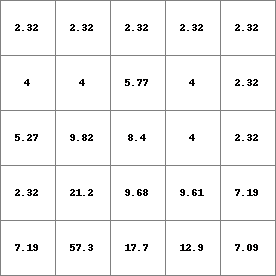
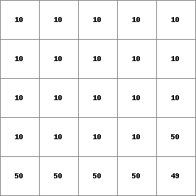

kinematic¶
kinematic
Kinematic Wave equation
Qnew = kinematic(ldd, Qold, q, alpha, beta, nrTimeSlices, dT, dX)
- ldd
- spatial ldd
- Qold
- spatial, non spatial scalar
- q
- spatial, non spatial scalar
- alpha
- spatial, non spatial scalar
- beta
- spatial, non spatial scalar
- nrTimeSlices
- spatial, non spatial ordinal
- dT
- non spatial scalar
- dX
- spatial, non spatial scalar
- Qnew
- spatial scalar
Operation¶
The objective of this operator is to solve the kinematic wave. The kinematic wave equations are (from Chow):
dQ/dX + dA/dT = q and
A = alpha * Q**beta
combined into: dQ/dX + alpha*beta*Q**(beta-1) * dQ/dT = q
Q streamflow through channel (m3/sec)dQ delta Qq inflow into the channel (m3/sec)dT timestep used in the model (sec)dX channel length through cell (m)alpha coefficientbeta coefficient
The objective is to solve the equations for Qnew at each point in the map, given the channel parameters alpha and beta, the lateral inflow q and the initial conditions Qold. For each cell calculates the accumulated amount of material that flows out of the cell into its neighbouring downstream cell. This accumulated amount is the amount of material in the cell itself plus the amount of material in upstream cells of the cell.
The total set of equations is solved in an iterative process for nrTimeSlices iterations. The nrTimeSlices argument can be defined per catchment. For each cachment the nrTimeSlices value used is defined at its pit position. nrTimeSlices values at non pit positions are discarded.
Unlike the accuflux-family of functions this function allows for streamflow calculations in those situations where the average travel time through a cell is within the magnitude of the model time step.
Notes¶
This is an experimental implementation of the numerical solutions of the kinematic wave equations. The stability and accuracy of the equations can not be gauranteed under all circumstances.
The kinematic-operations uses (unlike other pcraster commands) defined units for the calculations. Whereas other pcraster commands can operate with any consistent system of units, the kinematic-operation explicitly needs its input parameters in (cubic) meters and seconds, and the result is in qubic meters per second. This explains the explicit use of dX and dT in the interface of the operator.
Additional sediment flux based on the channel flow calculated with this operator can be obtained by the code shown in example 1 below.
Group¶
This operation belongs to the group of Neighbourhood operators; local drain directions
See Also¶
Examples¶
- • pcrcalcbindingQnew = Qnew.map;Ldd = Ldd.map;Material = Material.map;initialreport Qnew = kinematic(Ldd,Material,0,1.5,0.6,1,15,10);• pythonLdd = readmap(“Ldd.map”)Material = readmap(“Material.map”)Qnew = kinematic(Ldd,Material,0,1.5,0.6,1,15,10)
Qnew.map Ldd.map Material.map  
